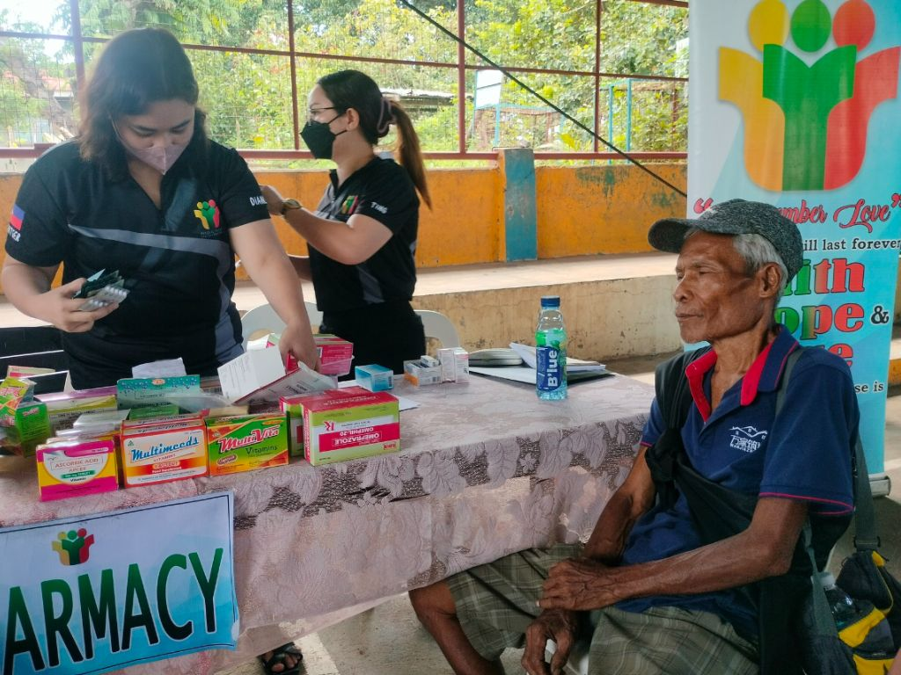
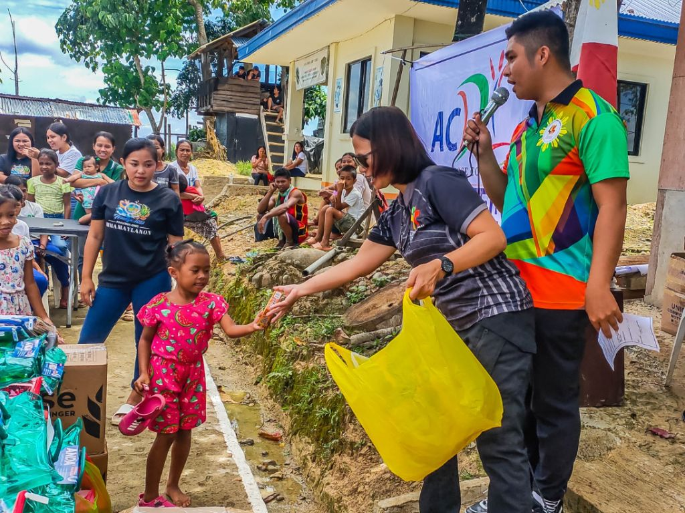
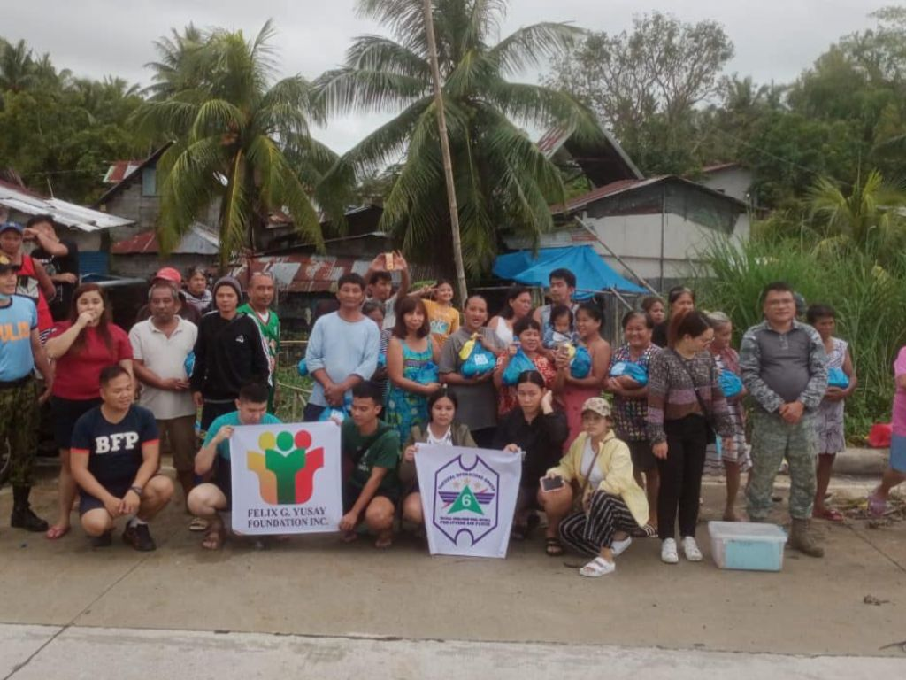

Latest Activities

Brgy. Carabalan Medical Mission
The foundation joined the 94th Infantry Battalion, 3ID, Philippine Army in their Medical, Surgical and Dental Mission last September 10, 2023 at Brgy. Carabalan, Himamaylan City. Though the said barangay is known for its armed conflicts, FGYFI take the challenge by serving the poor in the community. FGYFI extend its help by providing doctors and medicines for the Medical Mission. Free check-up and medicines were availed by a total of 390 indigent patients.
September 22, 2023

Brgy. Mansalanao, Medical Mission
FGYFI conducted Medical and Surgical Mission on the mountainous area of Brgy. Mansalanao, La Castellana last September 3, 2023. The medical mission was a success with a total of 252 indigent patients who availed free medical check-up and medicines. A total of 45 boys availed free surgical services (circumcision) and medicines. Special thanks to our partner organizations who untiringly supported the mission – 61st SAC, PNP-SAF and 62nd IB, Philippine Army, PNP La Castellana, Brgy. Council of Brgy. Mansalanao, Kindness Bakery and to our medical doctors – Dr. Khristian Lloyd Patubo and Dr. Carl Angelo Hofileña.
Thank you for the all-out support of Yusay Credit and Finance Corporation and Yusay Realty Development Corporation as we continue to address and extend assistance for those who are in need. To God be all the glory.
September 3, 2023

Balik Eskwela, Himamaylan
FGYFI distributed a total of 68 complete sets of school supplies to indigent school children in the far flung and mountainous communities in Sitio Canluki, Brgy. Mahalang, Himamaylan.
A total of 10 Indigent young boys also availed free medicines and surgical services (circumcision) on the same day with the help and assistance of 94th Infantry Battalion – Charlie Company.
Thank you for the all-out support of Yusay Credit and Finance Corporation and Yusay Realty Development Corporation as we continue to address and extend assistance for those who are in need. To God be all the glory.
September 4, 2023

TOG 6 Relief Operations
The Tactical Operations Group 6, the Air Warriors in Western Visayas through its Tactical Advance Command Post (TACP) in Camp Alfredo Montelibano Sr, Bacolod City actively participated in a 2-day Relief Operations conducted at Brgy Sum-ag, Bacolod City last August 28 and 29, 2023.
The said barangay was one of the severely flooded barangays in Bacolod City. With the efforts of the Units active stakeholders and other partner agencies, a total of 125 children and 100 families were given relief goods, used clothes, medicines, vitamins and basic first aid kits.
The Felix G. Yusay Foundation Inc., Philippine National Police, Bureau of Fire Protection, and Emergency Operations Center of Sum-ag, Bacolod City all contributed to making the relief operations possible.
Helping others in need has always been our battle cry in serving other people in this part of the Country. The Air Warriors in Western Visayas will continue its dedication and hard work to help others especially in this trying times. With our mission which is to plan, direct, and coordinate the employment of airpower within its area of responsibility, we also extend our helping hands to win the hearts of the people as part of the whole-of-the-nation approach in our area. (Sgt Peniero, TOG 6)
August 28-29, 2023